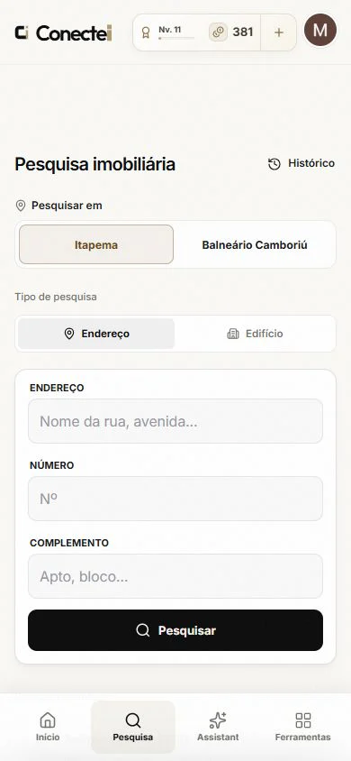
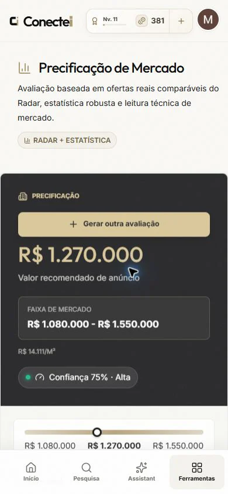
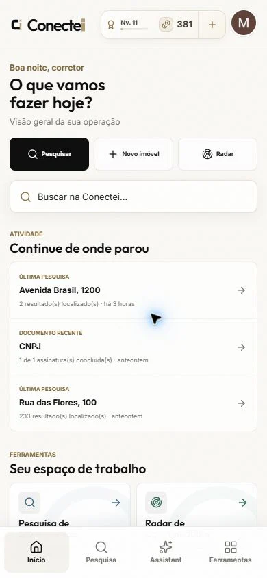

0K+
linhas entre produto,plataforma, testes e entrega
Portfolio / 2026
Produtos digitais de ponta a ponta
Product engineer · Creator of Conectei
Estratégia, experiência, código, dados e operação — transformados em software que resolve problemas reais.
Ver projeto00 Princípio
Software é uma cadeia de decisões.
Eu cuido da cadeia
inteira.
Do primeiro fluxo à infraestrutura em produção, conecto o que o usuário sente ao que o negócio precisa — sem perder a precisão da engenharia.
01 Flagship project
SaaS B2B · Web + PWA
Produto proprietário em operação
Uma operação. Um sistema.
Uma plataforma de inteligência e operação imobiliária que acompanha a jornada inteira — da descoberta de uma oportunidade à decisão, relacionamento, documentação, publicação e leitura de desempenho.
0K+
linhas entre produto,0+
arquivos organizados0×
momentos da operação01
plataforma integrada01 / Encontrar
Pesquisa estruturada, mapa, Radar de Oportunidades e mercado transformam sinais dispersos em um ponto claro para começar.

02 / Decidir
Precificação, indicadores, crédito e comparáveis ajudam a sair do “acho” para uma recomendação legível, explicável e pronta para uso.

03 / Operar
CRM, agenda, carteira, equipes, documentos, sites e analytics preservam o contexto entre a intenção e a execução.

System thinking
Cada módulo devolve informação para o próximo. O produto aprende com a própria operação.
“Consigo navegar do detalhe de uma microinteração à arquitetura que mantém todo o produto de pé.”
02 Capabilities
Amplitude sem perder profundidade.
Decisões conectadas, do
início ao fim.
Meu trabalho acontece na interseção. Eu traduzo estratégia em experiência, experiência em sistema e sistema em operação confiável.
Transformo ambiguidade em recorte, prioridade, fluxo e uma experiência que faz sentido para pessoas e negócio.
Hierarquia, interação, acessibilidade e motion trabalhando juntos — beleza como consequência da clareza.
Interfaces performáticas, serviços, contratos, dados e arquitetura desenhados como partes do mesmo produto.
Inteligência contextual, assistentes e automações com controle explícito, utilidade real e revisão humana.
Modelagem, visualização e indicadores que deixam o próximo passo legível — sem decorar a tela com números.
Testes, segurança, observabilidade e entrega contínua para o software continuar confiável depois do deploy.
03 Miguel Zacca
Gosto dos problemas em que produto, design e engenharia precisam sentar na mesma mesa — e sair de lá falando a mesma língua.
A Conectei é a síntese dessa forma de trabalhar: um ecossistema amplo, responsivo e operacional, criado com atenção ao detalhe sem perder a visão do todo.
Minha régua é simples: o usuário entende, o negócio avança e a tecnologia aguenta crescer. Quando as três coisas acontecem juntas, o produto deixa de ser interface e vira infraestrutura para fazer algo melhor.
Clareza antes de complexidade
Detalhe sem perder o sistema
IA como ferramenta, não ornamento
Qualidade é parte do produto
04 Próxima conexão
Produto, engenharia ou uma ideia que ainda precisa ganhar forma. Vamos colocar as partes na mesma mesa.